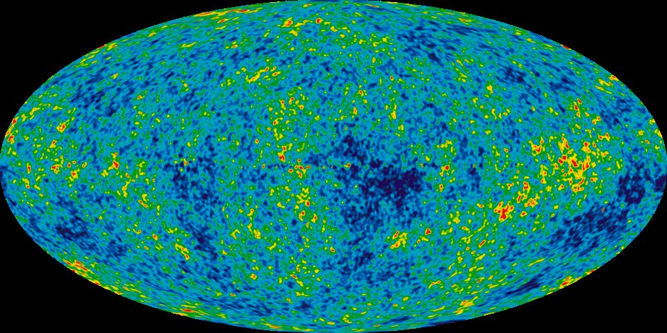

The cosmic microwave background
The oldest light in the universe, released 380,000 years after the Big Bang, still reaching us from every direction.


For its first 380,000 years the universe was a soup of particles so hot and dense that light could not travel: it bounced around constantly, as in a thick fog. When the temperature dropped to about 3,000 degrees, electrons joined nuclei, the first atoms formed and, suddenly, the universe became transparent. That first released light is still travelling across the cosmos today.
Stretched light
Since then the universe has expanded about 1,100 times, and that light has stretched with it into microwaves, invisible to the eye. Today it corresponds to a temperature of just 2.725 degrees above absolute zero (−270.4 °C). It arrives from every direction in the sky with almost the same intensity.
A discovery by accident
In 1964, Arno Penzias and Robert Wilson were working with a Bell Labs antenna in New Jersey and found a persistent noise they could not get rid of, not even after cleaning pigeon droppings out of the antenna. A few kilometres away, a Princeton team was preparing an experiment to look for exactly that radiation. On hearing the news, one of them said: "Boys, we've been scooped." Penzias and Wilson won the Nobel Prize in 1978.
A map of the baby universe
The COBE (1989), WMAP (2001) and Planck (2009, European Space Agency) satellites have mapped this radiation with ever greater precision. Its temperature is almost uniform, but it has tiny variations of one part in a hundred thousand. They are the seeds of everything: slightly denser regions pulled in more matter and in time gave rise to galaxies and clusters.
By analysing the size of those spots, cosmologists have calculated very precisely the universe's age, its shape (it is almost exactly flat) and its make-up: 5% ordinary matter, 27% dark matter and 68% dark energy. George Smoot and John Mather received the 2006 Nobel Prize for COBE's results.
Seeing the universe as it was
The cosmic background is as far as we can see with light: beyond it, the universe was opaque. It is like a photograph of the universe at 380,000 years old, the equivalent of a picture of an 80-year-old taken the day after they were born.
Videos to understand it better
- Cosmic Microwave Background ExplainedPBS Space Time · 1.4M views
- Is the Cosmic Microwave Background a Huge Mistake?Sabine Hossenfelder · 703K views
Videos are from YouTube and belong to their creators. They only load when you click them. See all videos →